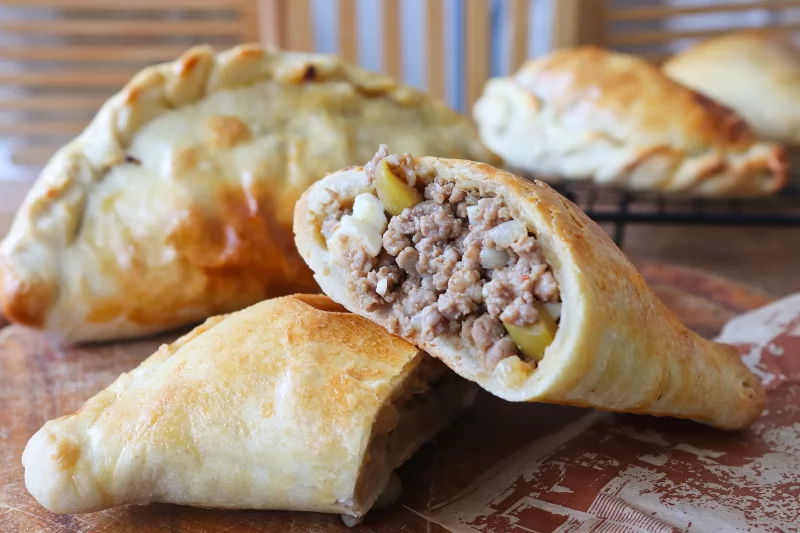

Seguro que alguna que otra vez, habéis probado una empanada argentina de carne en algún puesto de comida rápida o en un restaurante especializado. Con esta receta, aprenderemos a preparar nuestras propias empanadas argentinas de carne molida en casa, desde la masa hasta el relleno.
Existen muchos tipos y variedades de empanadas, más allá de la típica empanada de atún gallega a la que estamos más acostumbrados. Buena prueba de ello son las empanadas argentinas. Hay muchos tipos de relleno para las empanadas argentinas, cada cual más delicioso. Hoy nos vamos a centrar en las empanadas de carne de ternera, con picadillo de huevo duro, pasas y aceitunas.
Para la masa:
Para el relleno: